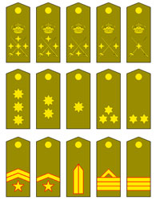

Ya conoces una forma de clasificar las matrices por una característica propia, su orden. Este orden se representa \(n \times m\), donde \(n\) es el número de filas y \(m\) el número de columnas. Esta misma clasificación la podríamos utilizar en los escuadrones militares, clasificándolos según el número de filas y de columnas que tiene cada escuadrón.
Pero el ejército también tiene otras formas de clasificar a sus escuadrones a través de otra característica propia de los mismos. Esta otra forma es mediante los galones más altos del militar que pertenece al escuadrón. En este caso un escuadrón podría ser de Teniente si de entre todos los militares que pertenecen al mismo el de mayor rango es un Teniente, o podría ser capitán o coronel... dependiendo del oficial de mayor rango que pertenezca a ese escuadrón
Cada uno de estos galones se identifica mediante una insignia que representa el rango militar que tiene.

En el caso de las matrices también vamos a poder identificar una característica que la identifica como si fuera un rango militar.